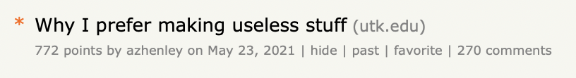
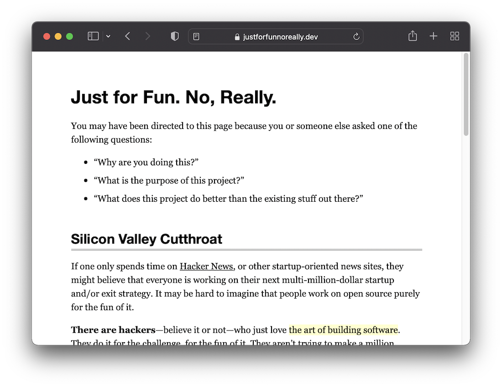
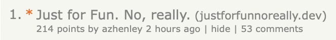
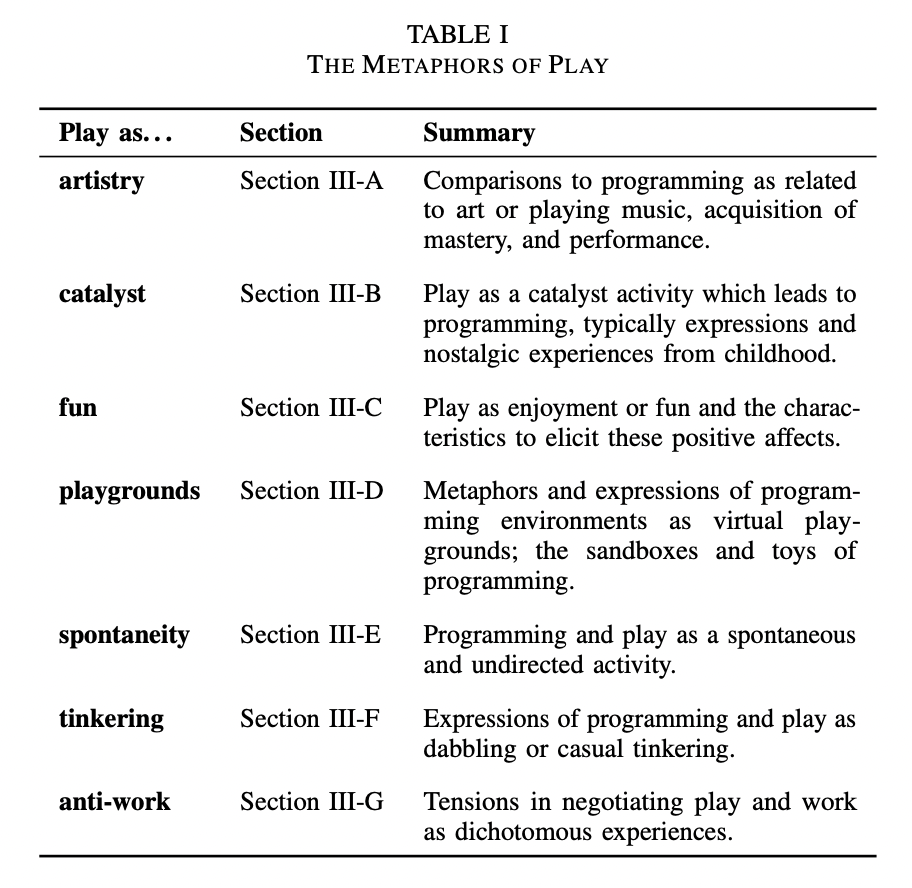
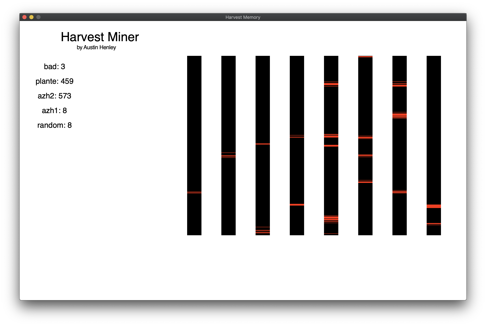

I work on AI + dev tools.
Sometimes I enjoy programming as play. The only goal is that I make something fun and whimsical that serves no real purpose except maybe that I can share it with friends.
Similarly, I've written about why I prefer making useless stuff, which caused quite a ruckus on Hacker News and Reddit.
But I'm not the only person that has pushed for programming just for fun:
Funny enough, I submitted this website (JustForFunNoReally.dev) to Hacker News and it immediately rekindled the same ruckus:
But I find it so freeing when there is no expectation to accomplish an objective or for the outcome to even be usable. I just want to enjoy the creative process of building something and possibly show it to others. Many people seem to think of programming as purely pragmatic. Something you do only for work or to get a task done.
I want to change the notion that programming has to be a serious endeavor.
In fact, there is an academic paper that studied this phenomenon: Expressions on the Nature and Significance of Programming and Play. They did a qualitative analysis on Hacker News comments to understand how programmers interpret programming as play through their own experiences.
There were 7 themes of programming as play identified from the analysis: artistry, catalyst, fun, playgrounds, spontaneity, tinkering, and anti-work.
The tension between programming for work and for play certainly resonated with me.
"If code is art, then GitHub is the exhibition halls through which the art is displayed."
The researcher went on to summarize playful programming as "experiences that allow programmers to spontaneously and creatively express their ideas to code, to provide safe playgrounds for experimentation, and to support tinkering as a purposeless, ludic activity."
I like that description.
That isn't to say that play is useless, or at least not in the sense that I wrote about before. I think it is quite the opposite! There is something about the expectation of doing something to get a job done or to learn or to make money that takes away from the enjoyment of just doing.
Even so, people have successfully applied play to more serious tasks. For example, Gidget, Scratch, Minecraft Education, and Lego MindStorms incorporate elements of play to teach children how to program.
My goal really is just to have fun though, and learning is a nifty consequence.
Here are a few examples of my for-fun projects:
Wiggleface is a silly game engine that gives you access to 16x16 wiggling pixels with a restricted palette of 8 colors running at 30 FPS. Ever heard of CHIP-8 or PICO-8? The idea is that technical constraints force you to be more creative.

Take a look at the repo for more details.
The Hofstadter esoteric programming language executes every line of the program's source code concurrently, one command at a time, in round-robin style. Each line can only store a single string value. There are 8 commands that include HTTP requests, regex, file I/O, console I/O, conditionals, swapping strings, and concatenating strings. That is it.
I didn't actually write any programs with the language (that doesn't sound fun, ha!). But a few of my students did. They even debated whether it is Turing complete or not.
Take a look at the repo for more details.
HarvestMemory is a competitive programming game where the objective is to harvest more fruit than any other player. Each player writes a program in an assembly-like language. Each program has access to shared memory where it can plant and harvest the fruit.
I ended up using some lecture time to let students play the game. It got particularly interesting when one student really started examining the design flaws and opportunities for the game to improve its balance and strategy potential.
Take a look at the repo for more details.
For these three examples, I did get some additional value from them because I used each of them as an in-class activity for a course I was teaching.
But there wasn't any expectations other than sharing my joy of programming!
I wonder what I'll program next?! 🥳